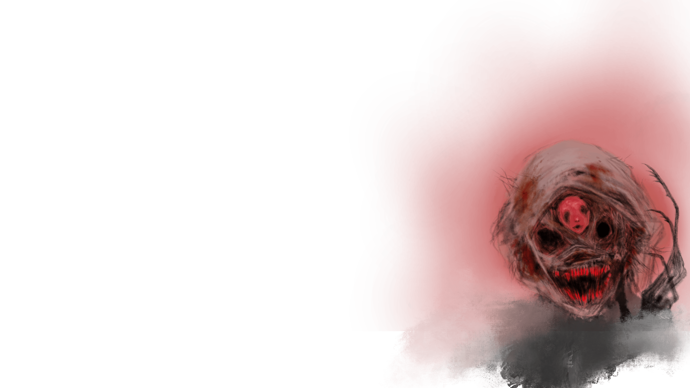
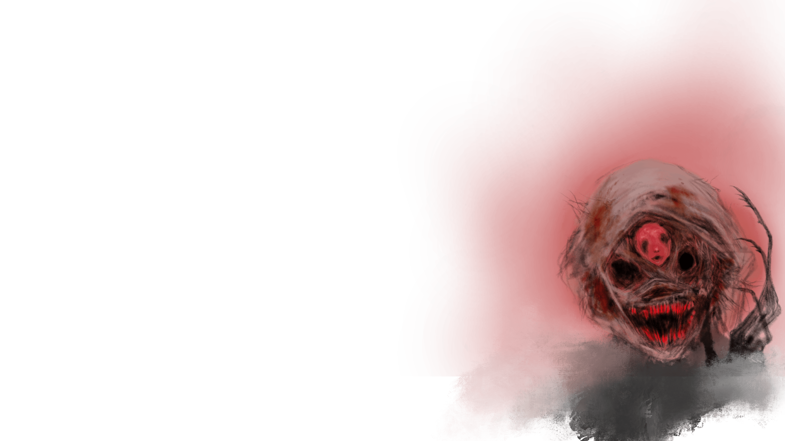

Siempre he pensado en el arte como el instrumento de comunicación mas antiguo que existe, siendo este muy anterior a la palabra escrita.
Este medio de expresión puede llegar a permear en sensaciones o ideas profundas que se hallan en nuestro pensamiento.
En ese sentido el arte sirve al mismo artista para expresarse, y al receptor, que puede recoger esta idea y dotarla de un nuevo significado.
Esa “inspiración inspiradora” es la que busco comunicar con mis obras.
Soy natural de Córdoba y ya desde muy pequeño me apasionaba dibujar monstruos y criaturas, mundos a los que les construía una historia.
Mi arte pasa por diversas disciplinas como el cómic, la pintura o el videojuego.
Soy un cuentacuentos que se expresa a través de historias, la mayoría de ellas dramáticas o de terror.
Busco un crisol de contrastes y emociones intensas, que remuevan el interior del espectador y le aporten una experiencia aterradora a la par que sanadora, pues también concibo el arte como método terapéutico.
En esta pagina podéis explorar todo un mundo construido alrededor del miedo, la curiosidad y el humor.
Espero que disfrutéis de mis obras tanto como yo disfruto llevándolas a cabo.